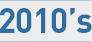
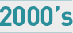
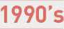

폴리 로고
주 메뉴

HOME >
ABOUT POLY >
History

-
2014
현재, 전국 총 41개 캠퍼스 (서울 13, 인천/경기도 16, 지방 12) 보유, 원생 : 13,784명
-
2013
베트남 호치민 교육청 우수학원상 수상
-
2012
- 베트남 호치민 교육청 ECP 프로그램 공급 공식 인가
- IET 대회 사상 최초 최우수 기관상 수상
- 제 8회 IEWC(국제영어글쓰기대회) 우수기관상 수상
- Sleeping Stones Program개발
-
2011
한국일보 한국교육산업대상 8연속 수상
-
2010
- 제 1회 POLY Debate Competition
- 미국 시애틀 지사 HR Center 설립
- 베트남 호치민 캠퍼스 설립

-
2008
- 제 1회 PSSA (POLY Summer School in America)
- PLAT(영어학력인증시험 POLY Language Aptitude TEST) 개발
-
2007
- E-Leaning Program(온라인 학습프로그램 개발)
- 제 1회 POLY Speech Contest
- ETI / FLI Program 개발
- 코리아타임즈 대한민국 외국어 교육대상(주니어 영어인재 부문 대상)수상
-
2005
- IET 최우수 영어학원 선정
- 한국일보 한국교육사업대상(초등/ 주니어 부문 대상)수상
-
2004
- AR Program (미국 현지 독서지도프로그램) 도입
- [대상] 코리아타임즈 베스트브랜드 수상(주니어 영어 부문)
- MAGNET Program 개발
-
2003
- KPS 미국지사 ESC 설립
- E-Learning Program 개발(온라인 학습 프로그램)
-
2001
폴리어학원 일산점 이전 개원(구 폴리 귀국학생 어학원)
-
2000
폴리 Elementary / Early Childhood Program 개발

-
1999
폴리 귀국학생 어학원 본원 개원
-
1997
폴리 귀국학생 교육 연구소 설립

하단내용